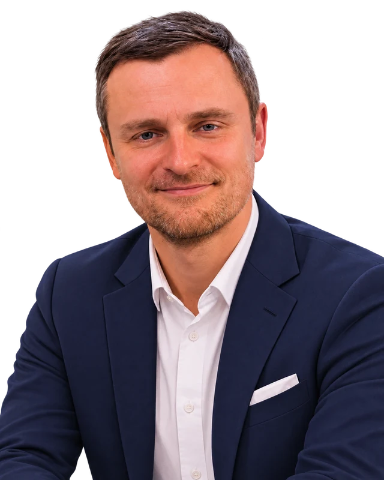

ABOUT
About Alex Rom
Alex Rom is an entrepreneur and engineer based in San Francisco, California. His work brings together technology, product development, venture building, and relationships across communities.
Engineering and product development
Alex focuses on turning challenging problems into practical technology and products. His engineering perspective informs how he approaches product decisions, execution, and building useful systems.
Entrepreneurship and startup building
Alex works on technology ventures and the practical work of developing, growing, and supporting projects. The current projects directory describes these initiatives without implying legal ownership or a particular founder role.
Technology communities and international experience
Alex values bringing founders, builders, operators, and curious people together. His experience spans conversations and connections across cultures and disciplines, with San Francisco as a professional home base.
Connect
For professional networking, visit Alex's LinkedIn profile, or browse the current projects and areas of experience.
